Theatre Posters
Theatre Posters Future Ex-BF
Future Ex-BF Nexus 6 Portraits
Nexus 6 PortraitsLe Bal
Based on a French film, this interpretation by Stephen Buescher and the cast takes a high-adrenaline approach of pure dance that takes the spectator through some of the main events in modern US history: from the AIDS crisis of the 80s to civil rights in the 50s and the civil struggles of modern age. For the poster and promotional imagery, I tried to make the graphics look intoxicated, with hand-drawn typography inspired by Pierre Bonnard, but with Whiskey instead of Champagne influences.
Based on a French film, this interpretation by Stephen Buescher and the cast takes a high-adrenaline approach of pure dance that takes the spectator through some of the main events in modern US history: from the AIDS crisis of the 80s to civil rights in the 50s and the civil struggles of modern age. For the poster and promotional imagery, I tried to make the graphics look intoxicated, with hand-drawn typography inspired by Pierre Bonnard, but with Whiskey instead of Champagne influences.

The Cuttlefish
The poster is anchored with a portrait with a theatre troupe sitting inside, literally holding the gaze with the eyeball, allowing the outrageous and terrifying aspects of the play to interplay on a brightly colored background. In my tribute to Witkacy, I annotated the work with the chemical substances affecting my creativity: in this case I used his code for caffeine and nicotine.
The poster is anchored with a portrait with a theatre troupe sitting inside, literally holding the gaze with the eyeball, allowing the outrageous and terrifying aspects of the play to interplay on a brightly colored background. In my tribute to Witkacy, I annotated the work with the chemical substances affecting my creativity: in this case I used his code for caffeine and nicotine.
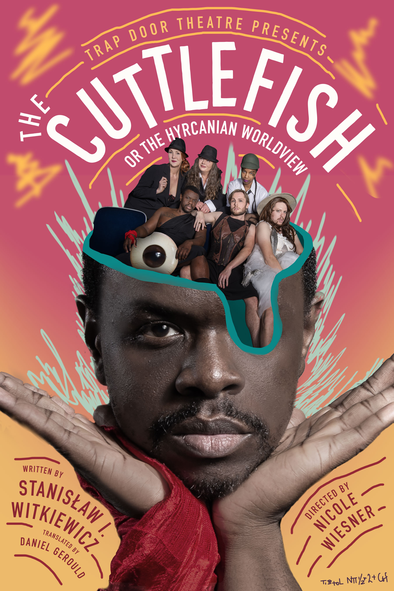
Green Corridors
Created with construction paper and colored pencils, the poster for Green Corridors is inspired by Kazimir Malevich and regional art movements from Ukraine. The story centers around safe passage-ways for those escaping the war.
Created with construction paper and colored pencils, the poster for Green Corridors is inspired by Kazimir Malevich and regional art movements from Ukraine. The story centers around safe passage-ways for those escaping the war.

Galileo
A humanizing portrait of the great scientist, torn between his scientific principles and his desire for the comfortable life that compliance with authority affords. The illustration for the Brecht masterpiece shows Galileo as a celestial body that is both propelled and hindered by all the other characters. Always a great collaboration with the director Max Truax.
A humanizing portrait of the great scientist, torn between his scientific principles and his desire for the comfortable life that compliance with authority affords. The illustration for the Brecht masterpiece shows Galileo as a celestial body that is both propelled and hindered by all the other characters. Always a great collaboration with the director Max Truax.

Mannequin’s Ball
On the one night a year when Mannequins can come alive and gather for a ball, one of them sneaks into the world of humans, becoming witness to a world of political intrigue, scandals and corruption. Jasieński’s pivotal piece The Mannequins’ Ball joins the absurdity of modern politics with the concept of human mechanization.
On the one night a year when Mannequins can come alive and gather for a ball, one of them sneaks into the world of humans, becoming witness to a world of political intrigue, scandals and corruption. Jasieński’s pivotal piece The Mannequins’ Ball joins the absurdity of modern politics with the concept of human mechanization.
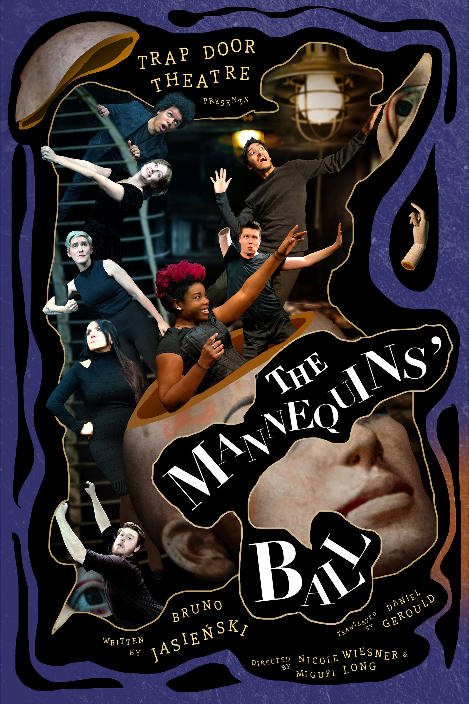
Mother Courage and her Children
Mother Courage becomes a parasite of war as she, hell bent on her own survival, celebrates the Thirty Years War as the source of her prosperity. Considered one of the greatest plays of the 20th century, wartime virtues become fatal to their possessors in this stark, anti-capitalist, and music filled play.
Mother Courage becomes a parasite of war as she, hell bent on her own survival, celebrates the Thirty Years War as the source of her prosperity. Considered one of the greatest plays of the 20th century, wartime virtues become fatal to their possessors in this stark, anti-capitalist, and music filled play.
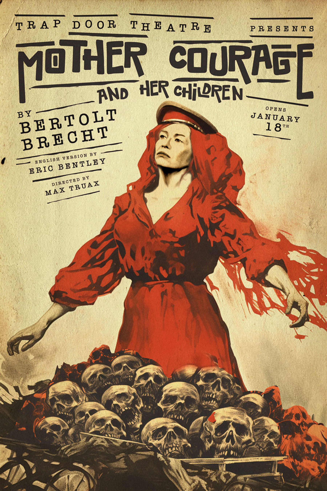
The Pragmatists
In a setting that is at the same time a torture chamber, a chamber of the heart, and a chamber for a virtuoso recital, two former friends are doomed to live the past over again while experiencing the future in advance. A too-close-for-comformt tale from my favorite playwright Witkacy. Each of the characters is portrayed as a mask hovering around the central character.
In a setting that is at the same time a torture chamber, a chamber of the heart, and a chamber for a virtuoso recital, two former friends are doomed to live the past over again while experiencing the future in advance. A too-close-for-comformt tale from my favorite playwright Witkacy. Each of the characters is portrayed as a mask hovering around the central character.
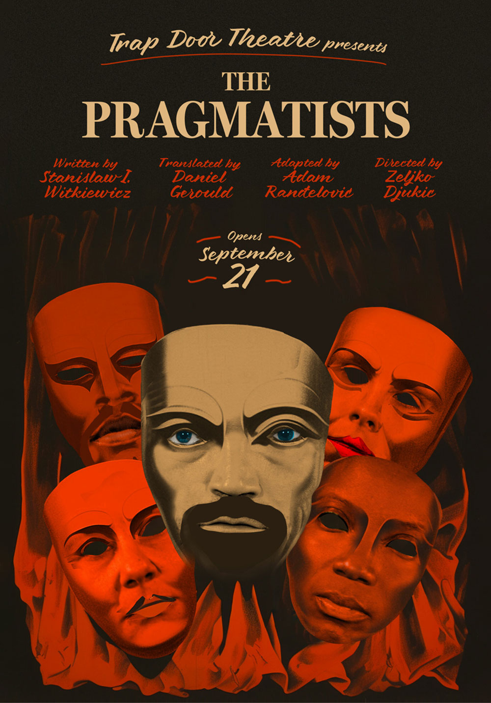
Bowie in Warsaw
Set in the landscape of a true crime story from 1970’s Poland, Bowie In Warsaw is an absurd comedy about the repression of self expression and love in a Soviet era Poland. It was a pleasure to meet and work with playwright Dorota Masłowska, who created this atomic-era Polish landscape.
Set in the landscape of a true crime story from 1970’s Poland, Bowie In Warsaw is an absurd comedy about the repression of self expression and love in a Soviet era Poland. It was a pleasure to meet and work with playwright Dorota Masłowska, who created this atomic-era Polish landscape.
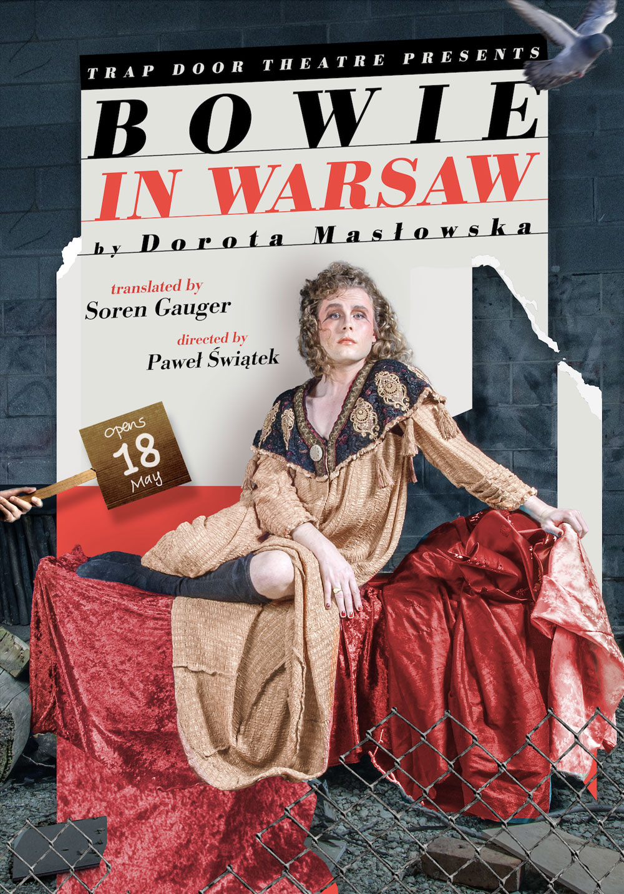
Joan and the Fire
Joan and the Fire examines the way in which history is constantly being rewritten to better serve those in power. When a group of performers staging their take on the myth of Joan of Arc are met by the myth herself, it becomes a battle of epic proportions to save history as Joan and the players each fight to tell their version of the story.
Joan and the Fire examines the way in which history is constantly being rewritten to better serve those in power. When a group of performers staging their take on the myth of Joan of Arc are met by the myth herself, it becomes a battle of epic proportions to save history as Joan and the players each fight to tell their version of the story.
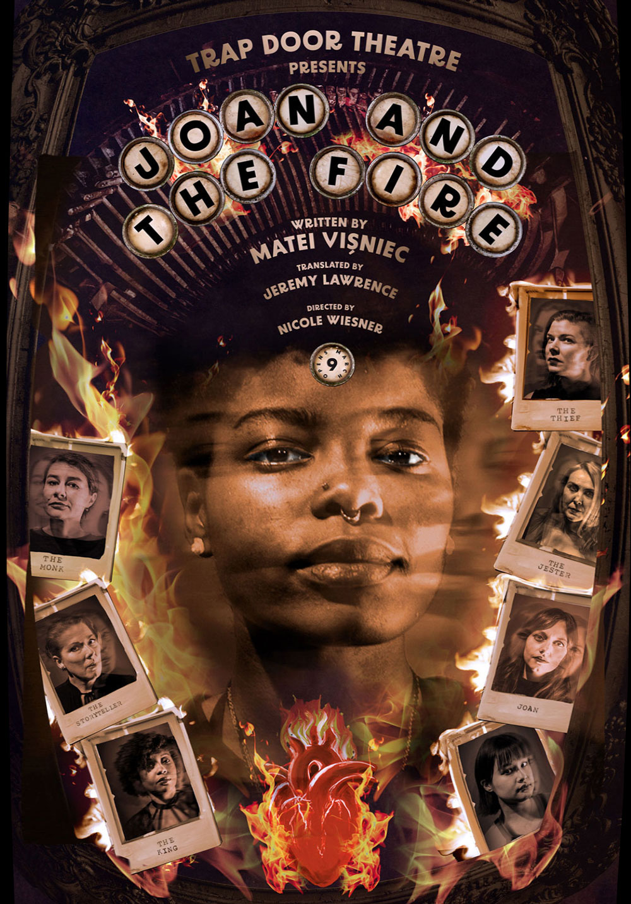
Princess Ivona
Ivona, a woman of few words, is forcibly entangled into the intrigues of a dysfunctional royal court after she becomes engaged to Prince Phillip. Her silence soon drives the courtiers to the brink of madness, bringing out their worst vices. Guest director Jenny Beacraft returns from Spain to direct this Gombrowicz piece. The poster is a tribute to Polish surrealists.
Ivona, a woman of few words, is forcibly entangled into the intrigues of a dysfunctional royal court after she becomes engaged to Prince Phillip. Her silence soon drives the courtiers to the brink of madness, bringing out their worst vices. Guest director Jenny Beacraft returns from Spain to direct this Gombrowicz piece. The poster is a tribute to Polish surrealists.
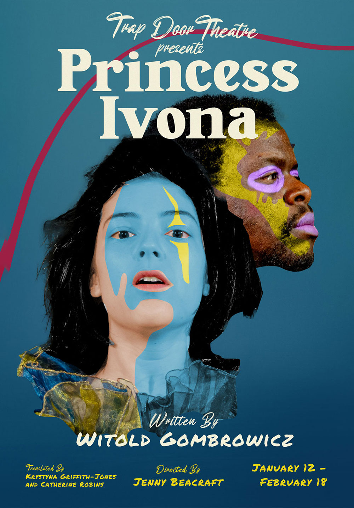
The Ugly One
Lette was never concerned with his looks until his peers, coworkers, and wife told him he’s the ugliest man in the world. If a pretty face is all he needs to succeed, and plastic surgery is the solution, will he be willing to go under the knife? The poster is a combination of all the performers faces, melded together in an attractive, if ugly, manner.
Lette was never concerned with his looks until his peers, coworkers, and wife told him he’s the ugliest man in the world. If a pretty face is all he needs to succeed, and plastic surgery is the solution, will he be willing to go under the knife? The poster is a combination of all the performers faces, melded together in an attractive, if ugly, manner.

Medea Material
Resident Director Max Truax returns to Trap Door to direct another Heiner Müller piece, after his triumphant production of Hamletmachine, which “calculated chaos and mastered madness with purpose, conviction, theatrical artistry, and artistic integrity.” Medea Material explores the story of Euridepes’ Medea and its surrounding mythology, and will engage Müller’s poetry and complex intersectionality in a dancetheatre spectacle.
Resident Director Max Truax returns to Trap Door to direct another Heiner Müller piece, after his triumphant production of Hamletmachine, which “calculated chaos and mastered madness with purpose, conviction, theatrical artistry, and artistic integrity.” Medea Material explores the story of Euridepes’ Medea and its surrounding mythology, and will engage Müller’s poetry and complex intersectionality in a dancetheatre spectacle.
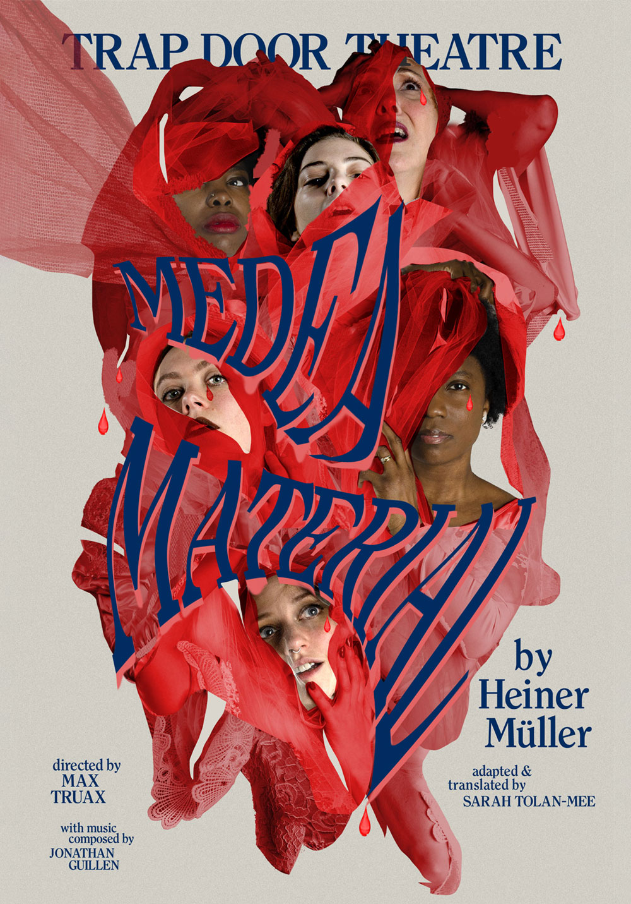
The Martyrdom of Peter Ohey
Poster for The Martyrdom of Peter Ohey. The photography was taken by the assistant director, and the concept was fairly set prior to the design. Loving the final output, and we were able to leverage each character as a separate social post to keep the momentum going.
Poster for The Martyrdom of Peter Ohey. The photography was taken by the assistant director, and the concept was fairly set prior to the design. Loving the final output, and we were able to leverage each character as a separate social post to keep the momentum going.
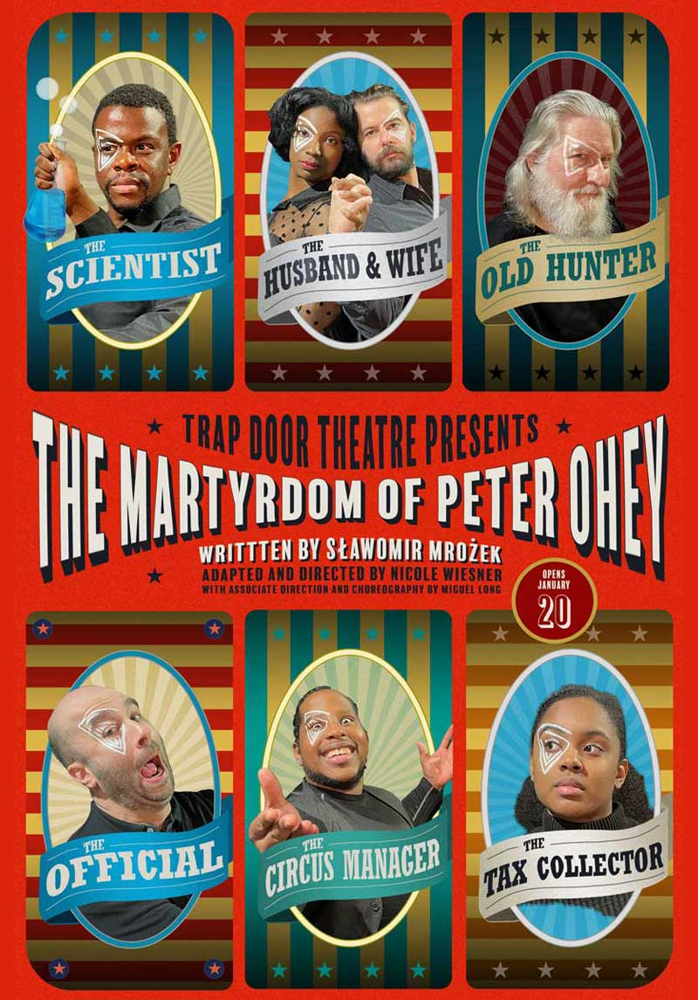
Dinner with Marx
Organic illustration for a virtual musical based on Matei Visniec's writings.
Organic illustration for a virtual musical based on Matei Visniec's writings.
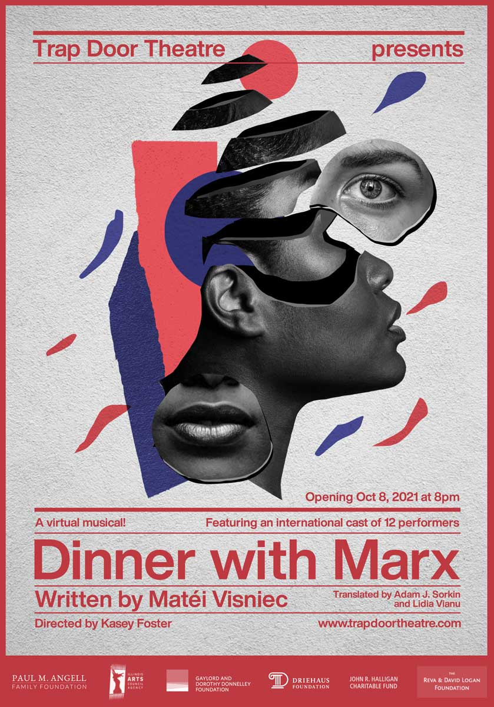
Queen C
So excited for live theatre to come back! Poster for Queen C for Trap Door Theatre. As always, honored to bring their vision to a poster design: trying my hand at organic shapes and a more limited color palette.
So excited for live theatre to come back! Poster for Queen C for Trap Door Theatre. As always, honored to bring their vision to a poster design: trying my hand at organic shapes and a more limited color palette.
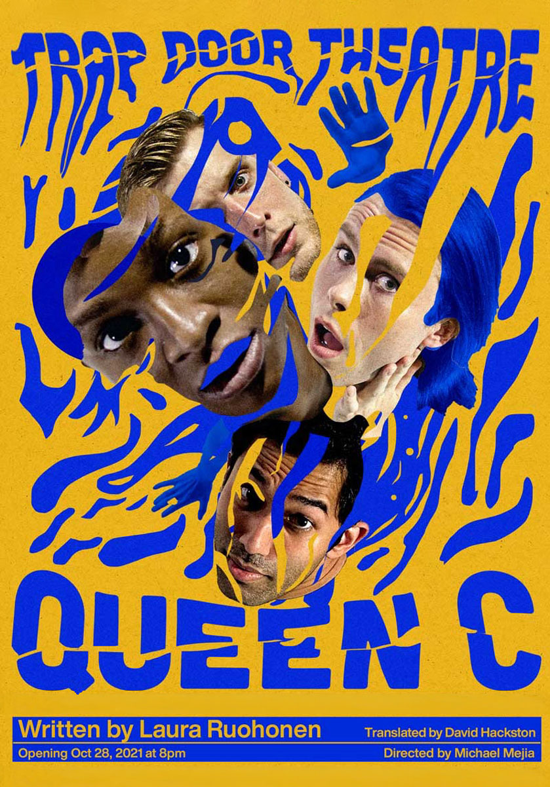
Discourse Without Grammar
Alternate design for the excellent virtual play Discourse Without Grammar by Matei Visniec at Trap Door Theatre. Out of several versions, the red was my favorite.
Alternate design for the excellent virtual play Discourse Without Grammar by Matei Visniec at Trap Door Theatre. Out of several versions, the red was my favorite.

And Away We Stared
The whole cast around a large eye illustration centered this poster into an organized frenzy.
The whole cast around a large eye illustration centered this poster into an organized frenzy.
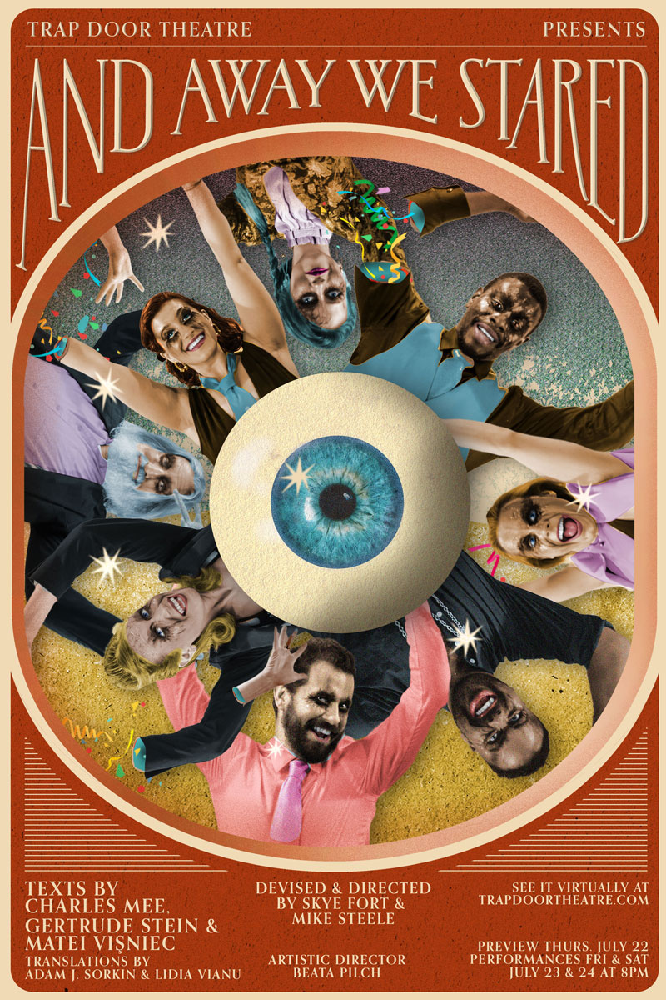